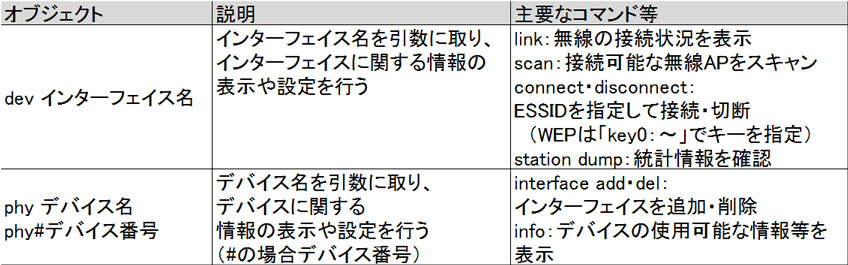
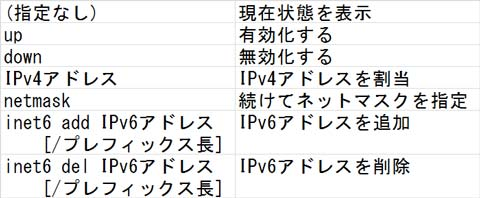
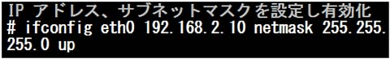
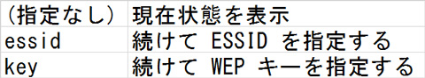
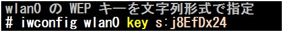
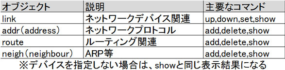
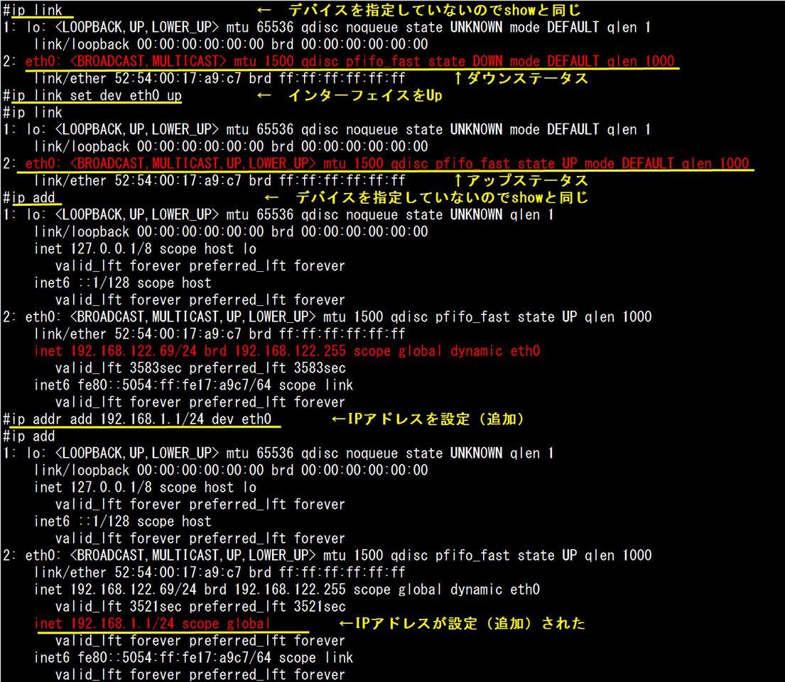
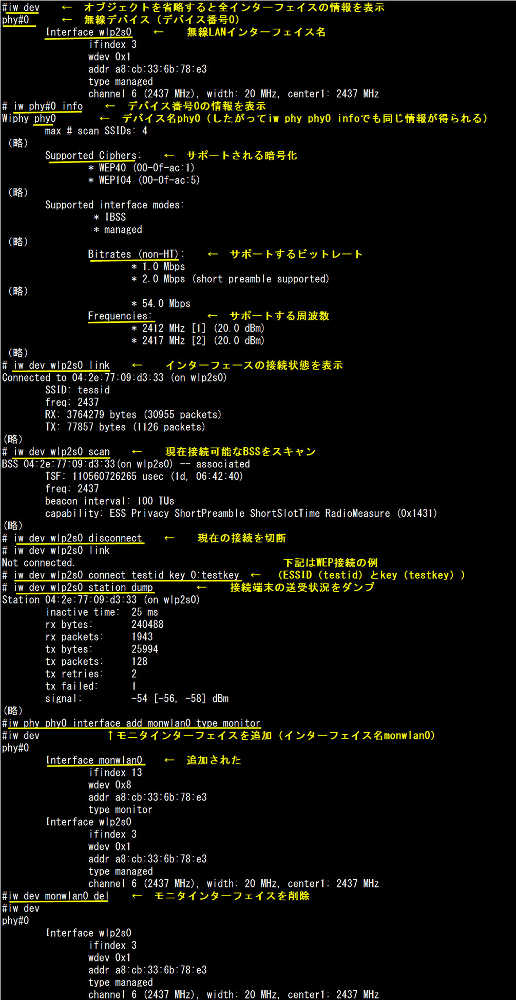

- 問題ID : 22144 基本的なネットワーク構成
- 履歴
正解
iw phy phy0 info
解説
無線関連の情報取得・設定を行うコマンドはiwコマンドです。
書式
iw オブジェクト コマンド
主なオブジェクト、コマンドは以下の通りです。

サポートする暗号化や周波数を確認できるのはデバイスの情報を表示できる「iw phy phy0 info」となります。この場合、「phy0」がデバイス名です。
※実行例は参考をご参照ください。
その他の選択肢は以下のとおりです。
・iw dev wlan0 station dump
端末通信情報を表示しますが、使用可能な暗号化や周波数の情報はありません。
・iw dev wlan0 scan
使用可能な無線接続先をスキャンします。
・iw phy phy0 station dump
このようなコマンドはありません
参考
ネットワークに関するデバイスは、eth0、eth1 などのインタフェース名として表されます。
そして、これらネットワークインタフェースに関する操作を行うコマンドとして ifconfig コマンドなどがあります。
書式
ifconfig インタフェース名 操作内容
ifconfig の「操作内容」としては、以下のようなものが指定できます。

操作内容を複数続けて指定することで、同時に操作を行わせることも可能です。

また、無線 LAN インタフェースに関連した設定のためには、iwconfig というコマンドが用意されています。
書式
iwconfig インタフェース名 操作内容
「操作内容」としては、以下のようなものが指定できます。

実例を示します。

iwconfig は無線 LAN 関連の操作のみを行うコマンドであり、無線 LAN インタフェースに対しては ifconfig の代わりに iwconfig を使う、というわけではないので注意しましょう。
無線 LAN インタフェースに関しても IP アドレスの設定や有効化・無効化といった操作は ifconfig コマンドで行います。
・ipコマンド
ifconfigを置き換えるコマンドとしてipコマンドがあります。
書式
ip [オプション] オブジェクト コマンド
ipコマンドは非常に広範囲を対象としていて、ifconfigがネットワークインターフェース操作を主としていたのに対し、ifconfigと同様の範囲だけでなく、routeやarpといったコマンドの範囲も関係しています。
主なオプション、オブジェクト、コマンドは以下の通りです。
主なオプション
「-4（IPv4を指定）」「-6（IPv6を指定）」
※これらのオプションは、指定したアドレスがIPv4、IPv6のどちらであるか明確であれば省略が可能です。
主なオブジェクトとコマンド

以
下は、オブジェクト「link」でeth0に対しコマンド「up」でインターフェイスアップを行ってインターフェイスをアップし、オブジェクト
「addr」に対してコマンド「add」を指定しています。ネットワークインターフェースをdevで指定している点、ネットマスクを「/」で指定している
点など、ifconfigと相違がありますので、注意しましょう。

・iwコマンド
無線関連の情報取得・設定を行うiwconfigを置き換えるコマンドとしてiwコマンドがあります。
書式
iw オブジェクト コマンド
ifconfigコマンドとiwconfigコマンドの関係と同じように、インターフェイスに関するip設定などはipコマンドで行います。
な
お、無線LAN関係は近年大きく変化していますが、その変化の一つに暗号化分野があります。現在ではあまり安全と言えなくなったWEPに替わってWPAを
使う場合は、WPAのクライアントプログラムである「wpa_supplicant」などが必要になります。（※詳細は試験範囲外のため省略します。）
主なオブジェクト、コマンドは以下の通りです。
以
下はiwコマンドを使って無線インターフェイスを確認し、その状態を表示させた例です。なお、実行例中で使用されているモニタインターフェイスは、決まっ
た周波数で行われる通常のデータ通信用ではなく、各周波数を指定してモニタしたり、キャプチャを行ったりする際に使用されるモニタ用のインターフェイスで
す。
